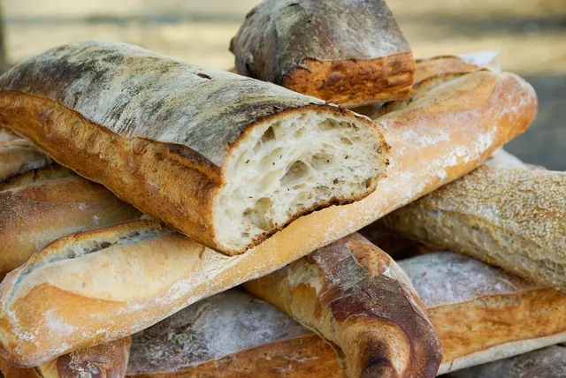
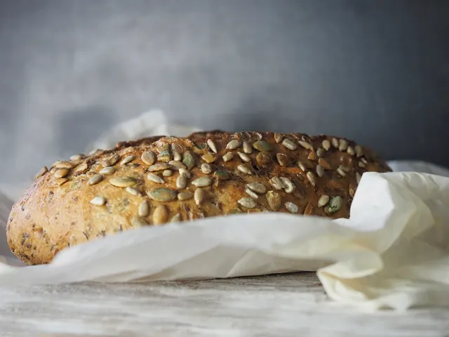
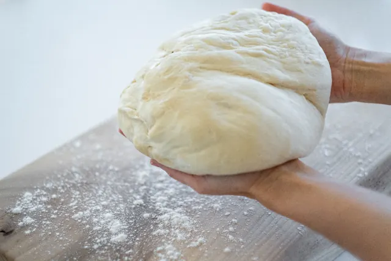
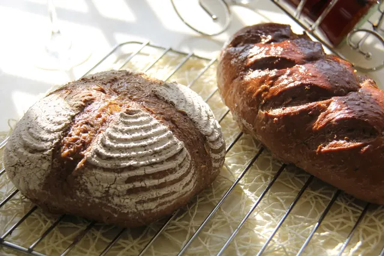
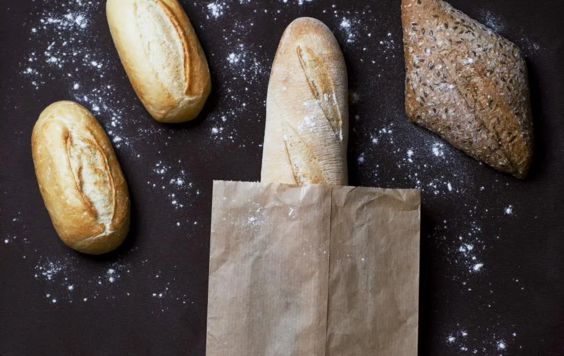

Pan que tarda 48 horas en estar listo.
Masa madre, harina de molino de piedra y un horno que encendemos a las cuatro de la mañana. Sin prisas, sin aditivos. En Getxo desde 1987.
Martes a domingo Lunes cerrado
Lo que sale del horno
Cada día, en cantidad limitada. Lo que se acaba, se acaba.
-
 5,80 €Pedir
5,80 €PedirHogaza de masa madre
Trigo y un 20 % de centeno. Corteza crujiente, miga abierta. Aguanta cuatro días.
-

1,90 €PedirBaguette de la casa
Fermentación lenta en frío. La que sale a las 7:30 vuela antes de las nueve.
-

6,40 €PedirPan de centeno y semillas
Denso, oscuro, con lino, pipas y sésamo. Perfecto para tostar.
-
 1,60 €Pedir
1,60 €PedirCroissant de mantequilla
Laminado durante dos días. Sábados y domingos.
Hoy en el horno
Encarga hoy, recoge mañana
Rellena el pedido en la web y te lo guardamos con tu nombre.
Elige
Marca qué quieres y cuántas unidades.
Envía
El pedido se abre en WhatsApp, listo para mandar.
Recoge
Te confirmamos y lo tienes reservado en el mostrador.
Cómo se hacen 48 horas
Lo que pasa antes de que el pan llegue al mostrador.
- 0 h
Amasamos
Harina de molino de piedra de Navarra y Álava, y la misma masa madre de hace más de treinta años.
- 24–48 h
Fermenta sin prisa
Entre 24 y 48 horas desde que amasamos hasta que el pan sale del horno. Sin aditivos.
- 4:00
Encendemos el horno
A las cuatro de la mañana, en el obrador que hay detrás del mostrador.
- 7:30
Abrimos
De martes a viernes a las 7:30. Sábados y domingos, a las 8:00.
Desde el obrador
Trucos y recetas para sacar más partido a tu pan.
-

Cómo empezar una masa madre en casa
Harina, agua y paciencia. Lo que hacemos en el obrador, explicado para tu cocina.
-

Cómo conservar el pan para que dure toda la semana
Ni en la nevera ni en bolsa de plástico. Tres trucos para que la hogaza llegue al viernes.

“Mi aita hacía el pan igual que lo hacemos hoy. Solo hemos cambiado el horno.”
Miren Arrieta, segunda generaciónUna panadería de barrio
Abrimos en la calle Mayor en 1987 y desde entonces hacemos el pan a mano, en el obrador que hay detrás del mostrador.
Nuestra historiaPan para tu restaurante o cafetería
Reparto diario en Getxo y Leioa antes de las 8:00.

¿Quieres que te guardemos pan?
Encárganoslo el día antes y lo tendrás reservado. También hacemos tartas y pedidos para eventos.